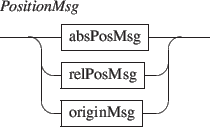

Next: 4.1.3 Components origin
Up: 4.1 Positioning
Previous: 4.1.1 Absolute positioning
Contents
Index
4.1.2 Relative positioning

- dx,dy, etc. messages are similar to x,y, etc. messages but the parameters represents values represent a displacement of the current target value.
- dscale is similar to scale but the parameters represents a scale multiplying factor.
Grame - Interlude project [ANR-08-CORD-010]